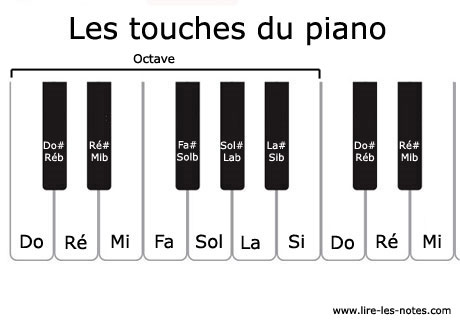

Le piano comporte des touches blanches et des touches noires. Les touches blanches représentent les notes naturelles : Do, Ré, Mi, Fa, Sol, La, Si. Ces notes se répètent tout au long du clavier. Pour les retrouver facilement : il faut repérer le groupe de deux ou trois touches noires : La touche blanche avant un groupe de deux touches noires est un Do. La touche blanche avant un groupe de trois touches noires est un Fa.
Les touches noires servent à jouer les dièses (#) et les bémols (b). Elles sont placées par groupes de deux et trois. Exemple : la touche noire entre Do et Ré peut s’appeler Do # ou Ré b selon la musique.
Cherche le Do central : c’est le Do au milieu du piano, souvent sous le logo de la marque. Les touches se répètent dans le même ordre sur tout le clavier. Les touches noires te permettent de jouer toutes les gammes et accords.